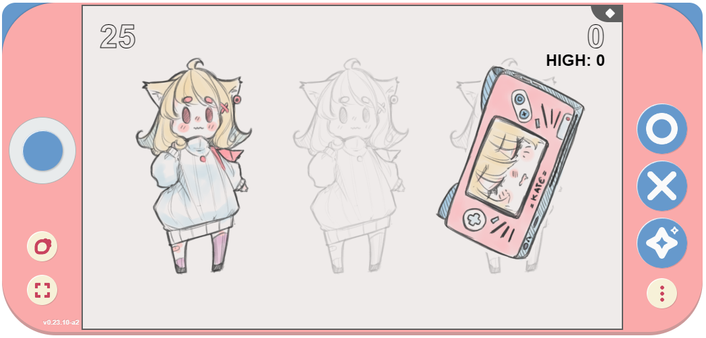
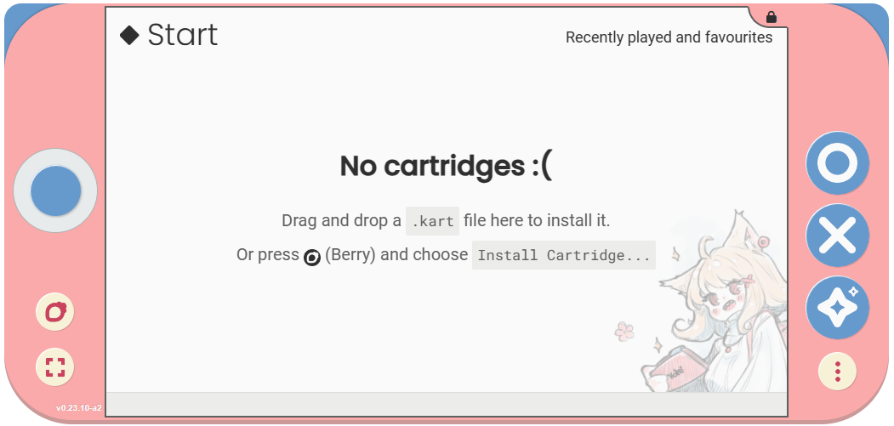
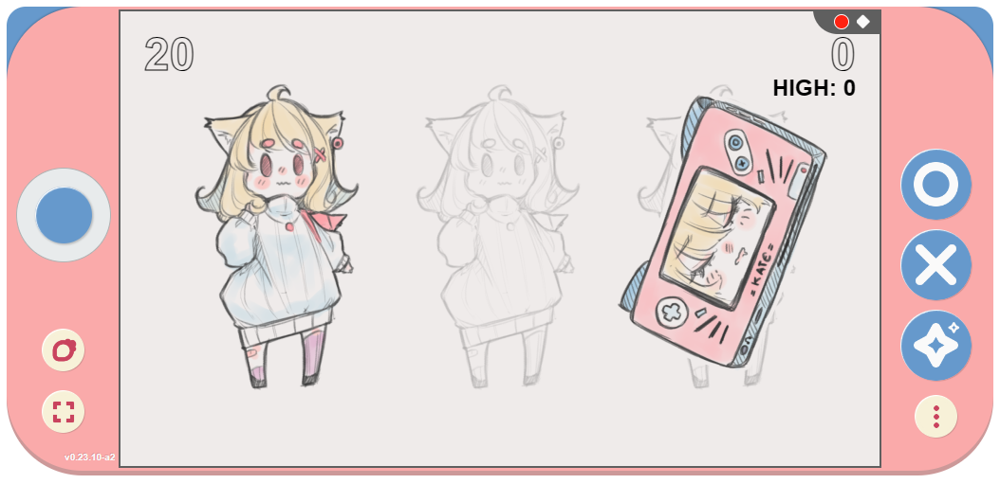

Trust and consent#
Sometimes there will be things happening in Kate which require your attention. This is often the case with dangerous or irreversible actions, such as deleting things from the database. But it might also arise from things that have more of a potential for harm, such as recording videos from a Kate screen.
For these cases Kate relies on the resource indicator to communicate what’s happening and what level of risk you’re currently taking. The resource indicator is designed to make it impossible for any cartridge to mimic, so you can always trust that the information comes from the trusted Kate code.
The resource indicator bar#
The indicator bar is a small bar of icons that’s always displayed on the top-right of the screen in Kate. For example, if you launch a cartridge you might notice a small diamond icon in this bar:
This indicates that Kate is currently showing you a regular cartridge screen, and that screen is not necessarily subject to the same privacy policy and security guarantees that Kate has, so you should be more cautious about what information you share with it.
On the other hand, when Kate shows you a screen that comes from Kate’s own code, you’ll see this same bar with a distinct pink background and a padlock where the diamond icon would be. Where this happens you can be assured that any interaction you have on that screen and any information you share will be subject to Kate’s privacy policy and security guarantees.
Background actions#
Besides indicating whether you can trust that the current screen comes from Kate’s own code or not, the resource indicator bar also houses other icons to show things happening in the background in the console. For example, when Kate is recording your screen you’ll see a small “recording” icon in this bar. Any other background action that might pose some risk will likewise be shown there.
Icons for background actions are shown in the bar simply for informational purposes, so you can make more informed risk assessments. They don’t require any action from your side.
Warning icons#
Sometimes your Kate installation or the device configuration will be in a status that might pose a risk to your data. For example, if you’re running low on storage space, it might not be possible to save your game. Or, if you’re running Kate without persistent storage, cartridges that you install might be gone when you close the emulator or turn off your Kate device. For these cases you’ll see a warning icon in the screen, and you can use the resource icon table in this page for suggested actions.
For example, in the image above the console is running without persistent storage (e.g.: this may happen if you run it in an anonymous window, or if you run in Chrome without installing Kate as a web app):

Resource icons#
Icon |
What is it used for? |
|---|---|
|
|
|
|
|

{kind=link}
{kind=link}
Note on non-visual cues#
Currently Kate uses only visual cues for the trust frame. This is a problem for players who have certain vision disabilities and rely on other output channels, such as a screen reader. In the future Kate will expand these security feedback channels to non-visual channels as well, but that requires more research and experiments.